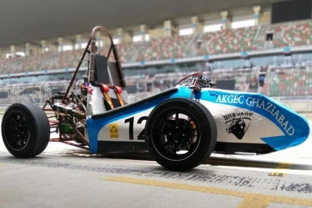
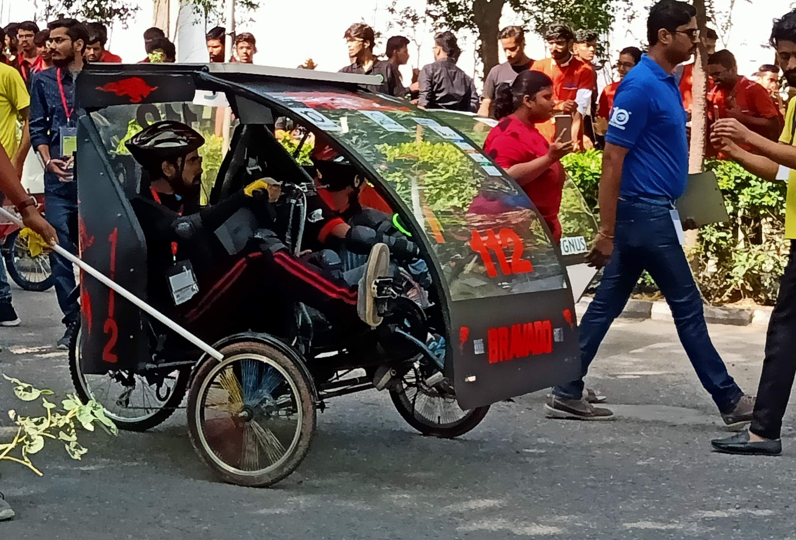
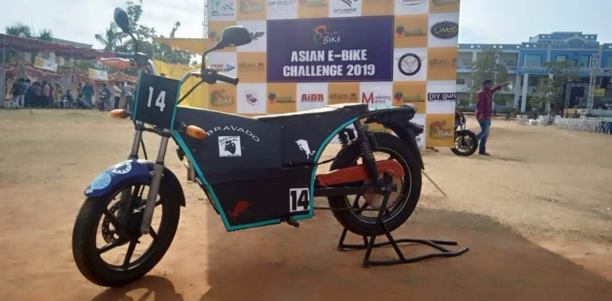

<section
  style="background-color: black;"
  fxLayout="row"
  fxLayout.sm="column"
  fxLayout.xs="column"
  fxLayoutAlign.gt-md="center"
  fxLayoutGap="10px"
  fxLayoutGap.xs="0"
>
  <div fxFlex>
    <mat-tab-group mat-align-tabs="center" style="color: white;">
      <mat-tab label="Supra">
        <div
          class="container"
          fxLayout="row"
          fxLayout.sm="column"
          fxLayout.xs="column"
          fxLayoutAlign.gt-md="space-around center"
          fxLayoutGap="10px"
          fxLayoutGap.xs="0"
        >
          <div fxFlex="40" fxFlex.sm="30" fxFlex.xs="30">
            
          </div>
          <div fxFlex="50" fxFlex.sm="30" fxFlex.xs="30">
            <h1>Supra</h1>
            <p>
              SAEINDIA, the Indian chapter of the Society of Automotive
              Engineers has been organizing the event for its sixth consecutive
              year, which sees students from engineering colleges across the
              country battle it out against each other in their quest to apply
              their technical knowledge on the ground by conceptualizing and
              developing a formula racing car. SUPRA SAEINDIA comprise of a
              series of Static and Dynamic events spread over five days,
              concluding with a final Endurance run and a valedictory function.
            </p>
          </div>
        </div>
      </mat-tab>
      <mat-tab label="Efficycle">
        <div
          class="container"
          fxLayout="row"
          fxLayout.sm="column"
          fxLayout.xs="column"
          fxLayoutAlign.gt-md="space-around center"
          fxLayoutGap="10px"
          fxLayoutGap.xs="0"
        >
          <div fxFlex="40" fxFlex.sm="30" fxFlex.xs="30">
            
          </div>
          <div fxFlex="50" fxFlex.sm="30" fxFlex.xs=30>
              <h1>Efficycle</h1>
            <p>
              This competition is an eco friendly venture based upon Engineering
              design and manufacturing of Electric bike completely by the
              students. The main aim of the event is to generate the interest of
              the student in the field of eco-bikes,and to bring a new
              revolution in the field of biking which can be commercialized as a
              usable product for the future generation. Beside the comprehensive
              knowledge of manufacturing and fabricating a single seated DC
              motor driven vehicle to maneuver on all types of terrains the
              E-bike Racing Challenge has a chance for participants to win many
              awards
            </p>
          </div>
        </div>
      </mat-tab>
      <mat-tab label="Ebike">
        <div
          class="container"
          fxLayout="row"
          fxLayout.sm="column"
          fxLayout.xs="column"
          fxLayoutAlign.gt-md="space-around center"
          fxLayoutGap="10px"
          fxLayoutGap.xs="0"
        >
          <div fxFlex="40" fxFlex.sm="30" fxFlex.xs="30">
            
          </div>
          <div fxFlex="50" fxFlex.sm="30" fxFlex.xs="30">
              <h1>E-Bike</h1>
            <p>
              Imagine To Innovate Asia E-bike Challenge is an eco-friendly
              venture based upon Engineering design and manufacturing of
              electric bike completely by the students. The main aim of the
              event is to generate the interest of the student in the field of
              eco-bikes, and to bring a new revolution in the field of biking
              which can be commercialized as a usable product for the future
              generation. Beside the comprehensive knowledge of manufacturing
              and fabricating a single seated DC motor driven vehicle to
              manoeuvre on all types of terrains.This helps to face real-world
              engineering design projects and other related challenges.
            </p>
          </div>
        </div>
      </mat-tab>
    </mat-tab-group>
  </div>
</section>
